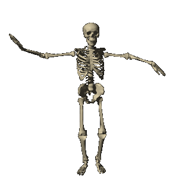

Click above to see details on my projects!
Coming from a childhood background of creating pencil drawings of characters in overfilled sketchbooks and corners of my papers, written or LARP/RPG fiction, needlework such as crochet and felting, and use of digital mediums like Sketchbook Express and Renpy, my goals with art have always stayed consistent with every new type of media that I encounter and experiment with. Combined with using storytelling as art, I have a deep enthusiasm and appreciation for the variety of receptions and applications of new technologies in art. I am highly immersed in mediums such as 3D modeling in Blender, VR game design, and digital character design, and am involved in the creative enthusiast communities that contribute to those mediums. This garners towards my unique perspective which centers around genuine and passionatelly propelled projects which are made for the sole purposes of exploring the limits of imagination with the tech provided. For example, I enjoy making texture and model edits to video games I played as a kid such as Rhythm Heaven Fever and Zelda: Wind Waker. In the same way, I am inspired to use the current wild west of the VR space as an extension of the internet to express myself freely, in the same way that our imaginations produced stories within immersive worlds when we were young. To me, I find purpose in creating the collision between interaction, full sensory experiences, and nostolgia. If I had to choose only three of my previous classes that molded me further into my ideal future art and career, I would certainly say ARTH 110: (New Media Art History), ART 24 (Drawing I) and ART 74 (Intro to Digital Media). These three topics have not only reminded me of why I wish to persure art, but have allowed me to find my same passion within others who come from many backgrounds including traditional art like me, who are just as interested and nerdy about both old and new technology, as well as where the two collide. To me, being a DMA student means being comfortable with not being comfortable in new circumstances, and not allowing the limits of tools to limit the scope of the experiences we want to share.
